本文主要介绍了maven中的生命周期和插件，介绍了maven中使用测试，并从头到尾建立一个web项目并进行发布。
生命周期和插件简介
9.1 生命周期
1、clean
2、compile
3、site
上面就是生命周期的完整过程，比如我们执行mvn compile，就会从validate一直执行到compile，如果我们执行的命令式mvn test，就会从validate一直执行到test，等等。
9.2 插件
插件是maven的核心，所有执行的操作都是基于插件来完成的
为了让一个插件中可以实现众多的类似功能，maven为插件设定了目标，一个插件中有可能有多个目标
其实生命周期中的重要的每个阶段都是由插件的一个具体目标来执行的
插件存放的位置：
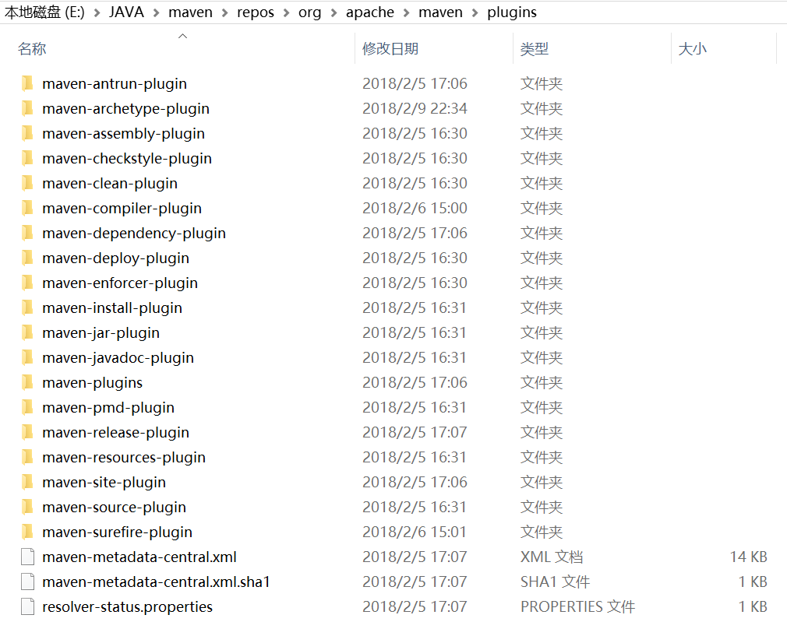
以往我们package之后，只会把工程的.class文件进行打包，如果我们想要把源代码也打包，就需要执行clean、source:jar命令了，这样就把源文件给打包了。
但是如果我们执行package，并不会把源代码打包进去，所以需要在user-parent的pom中设置插件，使得source插件绑定到compile生命周期上：
执行clean和package操作后，发现多了一些包：
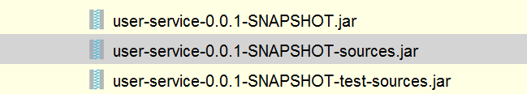
这样就把源代码和.class文件都进行了打包，打包成功。
测试
10.1 测试、跳过测试
现在我们在user-core中写一个测试类：
然后执行这个项目的test，发现这个类并没有被测试。
如果我们将这个类名字修改为HelloTest的话，就可以被测试到。
但是如果我们不想去修改呢？
只需要在user-parent的pom中加入下面的配置：
这样就可以了。
如果想要跳过测试，就增加一个skip选项：
执行test，发现测试被跳过：
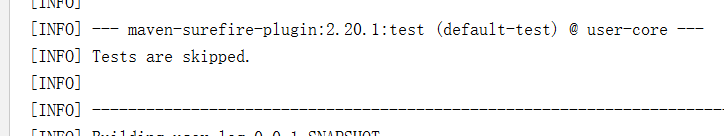
也就是所有的测试都没有被执行
如果我们的测试程序有语法问题，想直接跳过编译，可以如此配置：
执行结果是：
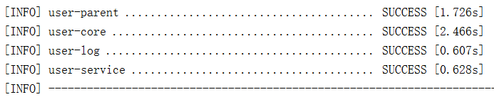
发现编译被跳过，测试全通过。
10.2 测试报告
我们有了测试，还想让maven给我们生成测试覆盖率报告，可以先将user-parent的pom配置修改回去：]
然后在IDEA中的Excute Maven goal中执行命令：
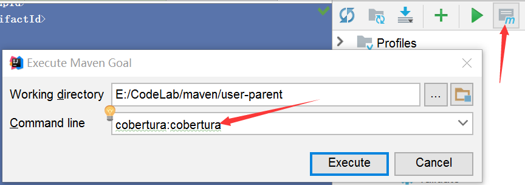
这样就会生成测试报告文件，我们在target中可以找到这个报告文件：
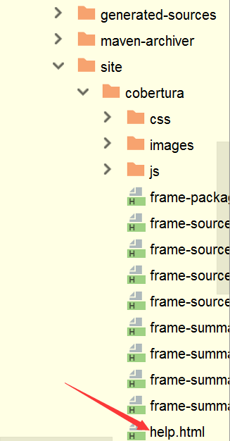
查看到的报告如下：
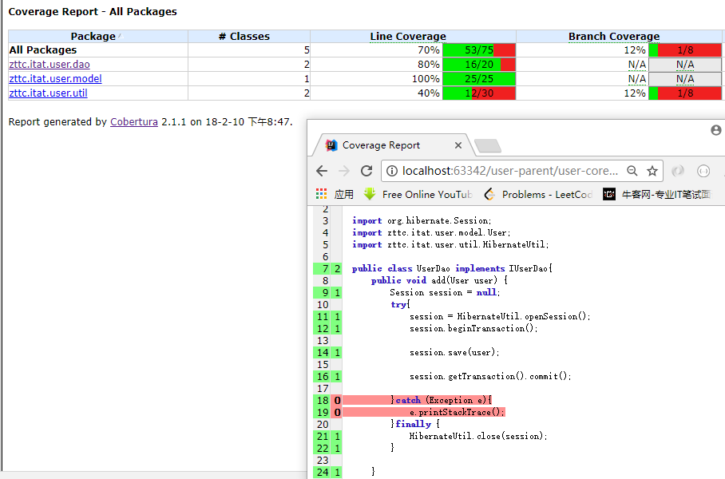
但是如果我们再次执行clean、test的时候，并不会生成测试报告。
如果我们想在test的时候就生成测试报告，那么需要在user-parent的pom中添加配置：
然后我们在user-core中的pom添加这个插件：
这样就在执行clean、test之后，会自动帮我们生成测试覆盖率报告，效果和上面一致。
发布web项目
先创建一个项目，骨架选择webapp的：
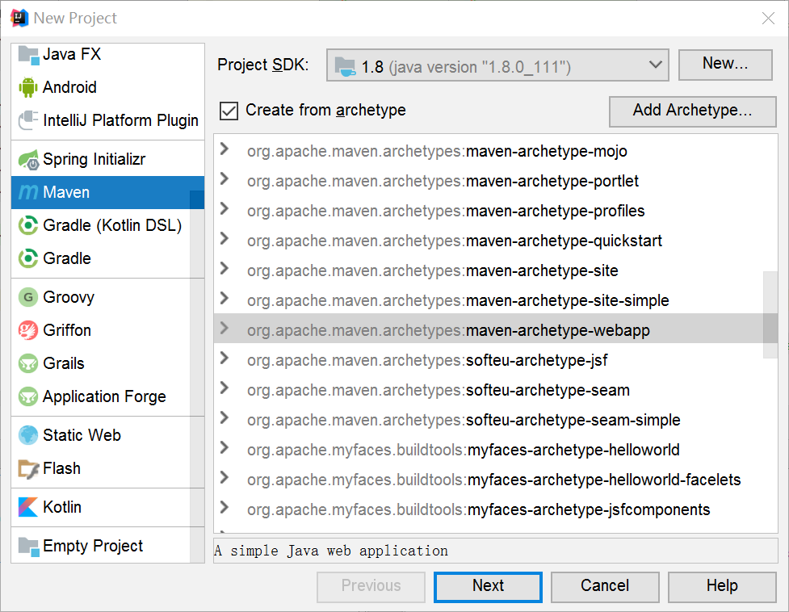
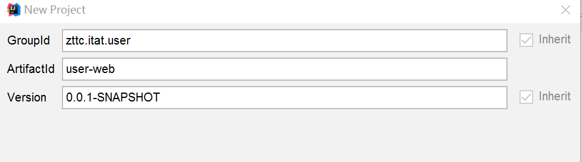
然后我们在user-web的pom中添加对user-parent的继承、对servlet-api、user-service模块的依赖：
在src/main/java下创建一个zttc.itat.servlet的包，在里面编写一个HelloServlet的类：
然后去配置web.xml：
hello.jsp代码为：
这个工程就写好了。下面我们执行maven的clean和package操作，就可以得到一个war包。将这个war包添加到tomcat的webapps目录下，启动tomcat，访问地址：
http://localhost:8080/user-web/hello.do
结果如下：
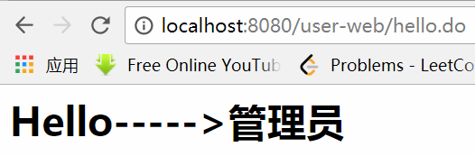
成功。
但是如果我们对代码进行修改，还需要重新打包，然后把war包在tomcat中进行替换，很麻烦。有一种办法可以使打包部署变得更加自动化，就是我们这里一修改，那里就直接进行修改。这种就是热部署，可以使用jetty的maven插件来实现。在user-parent的pom中添加插件：
然后我们将这个插件加到user-web的pom中：
这样就配置好了jetty。接下来我们创建两个Maven Goal：
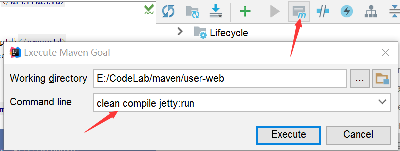
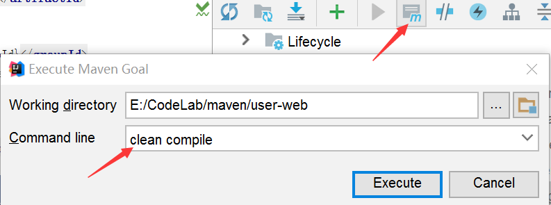
我们先执行第一个Maven Goal，这样我们输入http://localhost:8088/hello/hello.do，就会显示hello.jsp的页面，当我们修改jsp的时候，那边页面进行刷新就可以同步显示修改。
但是如果我们修改的不是jsp，比方我们修改的servlet的代码，那么在修改完成之后，还需要执行一下第二个Maven Goal，就可以将servlet的修改同步过去。其实第二个Goal的运行速度是相当快的，这样我们就可以理解为实现了热部署。